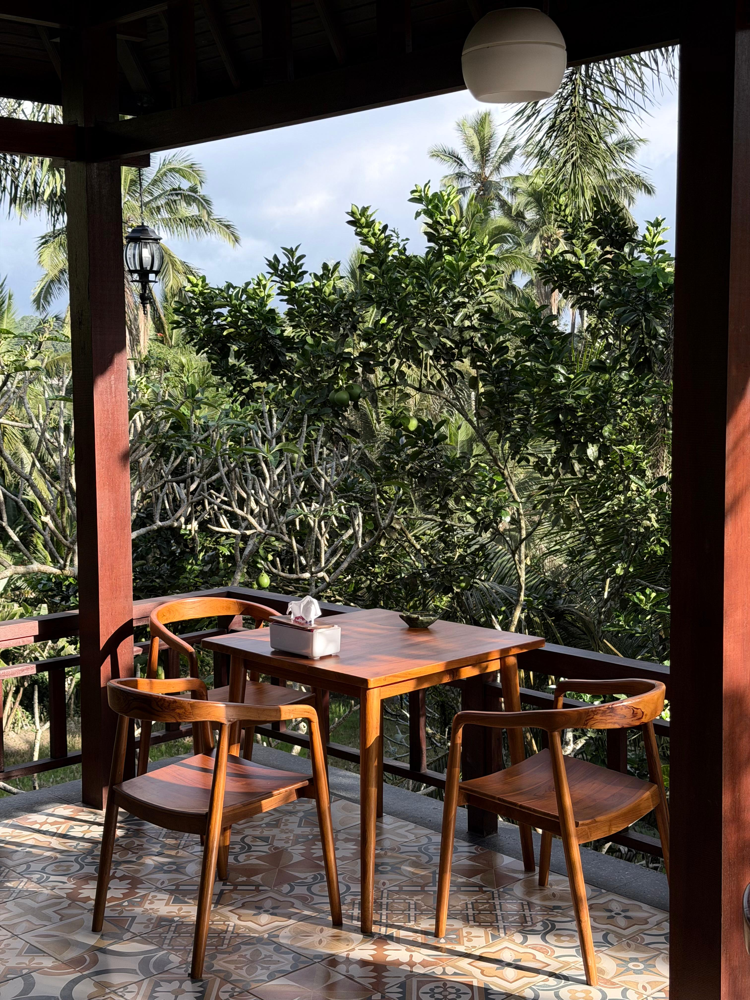
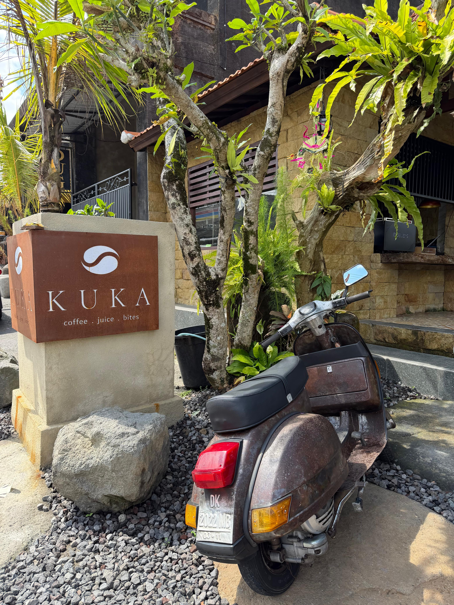
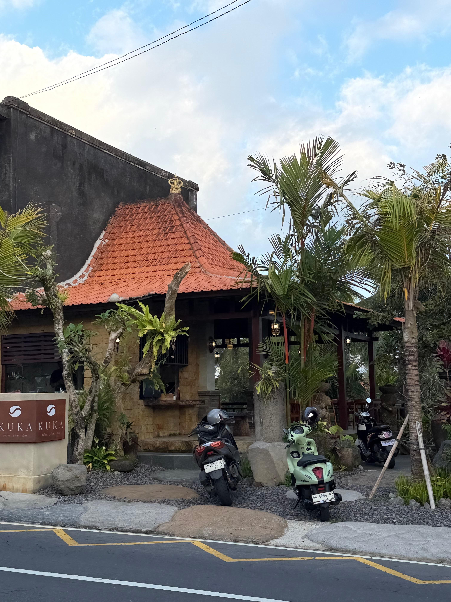
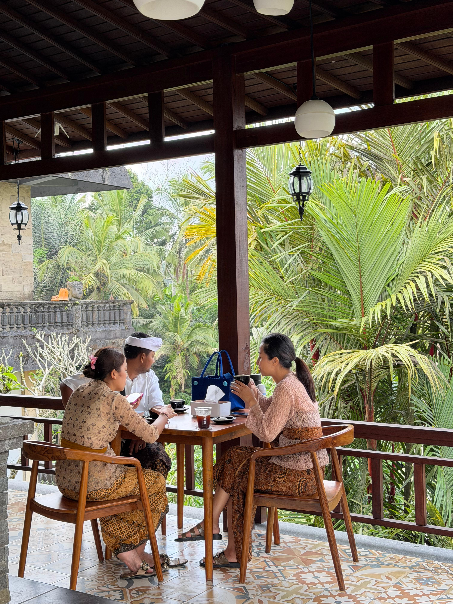

Artisanal Coffee in the Heart of Tegallalang
A sophisticated sanctuary where Balinese craftsmanship meets premium specialty coffee. Find your rhythm in our serene pavilion overlooking the rice terraces.
Discover Our Blend arrow_downwardThe Artesian Organic Aesthetic
KUKA is designed as a sophisticated "third space." Our architecture embraces materiality—hand-carved limestone and polished teak harmonizing with the lushness of the highlands.
Every detail, from the stonework masonry to the open-air pavilion, is an intentional nod to Balinese craftsmanship. We’ve moved away from sterile environments to offer a space that feels deeply grounded and authentically tranquil.


100% Arabica, Munduk and Kintamani Origin
Sourced from the cool highlands of Munduk and Kintamani. Celebrated for bright acidity, bold character, and clean finish.

The Munduk, Kintamani Profile
Experience notes of dark chocolate, subtle citrus undertones, and earthy volcanic depth.
Precision Pour
Our baristas are trained in exact extraction methods, honoring every cup and the farmer's hard work.
Tasting Notes
-
ecoBright Acidity
-
water_dropClean Finish
-
boltBold Character
Crafted for Clarity
Whether a velvety flat white or a crisp pour-over, our equipment is calibrated for pure precision.


A Sanctuary for Focus
Escape the sterile office. KUKA offers discerning travelers and digital nomads a "third space" that is both culturally authentic and professionally functional.
High-Speed 5G
Reliable, lightning-fast connectivity to keep workflow uninterrupted.
Plentiful Outlets
Thoughtfully placed power access at every seating area.
Tranquil Environment
Generous whitespace and natural acoustics for low cognitive load.
Ergonomic Comfort
Solid teak chairs designed for extended periods of comfortable work.
Find Your Peace
Located just north of Ubud, KUKA is highly regarded as the best coffee in Tegallalang.
Address
Jl. Raya Tegallalang
Gianyar, Bali 80561
Indonesia
Hours
Everyday: 7:00 AM - 6:00 PM